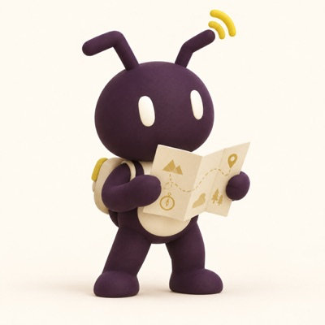
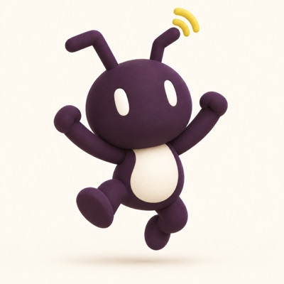

Atta 把流程的运行画成一张实时更新的图：上面是业务流程，下面是你的机器和执行体，中间的虚线标出每一步由谁执行。不用逐个打开会话去查。
点任一步骤，右侧显示它的上下文、循环记录和在整张图里的位置；鼠标移上去可以看整条链路
每个流程实例停在哪一步、哪些在并行、哪些已完成，都在图上。
每一步交付的内容跟着步骤走，执行环境没了也能取回。
需要你判断的步骤亮起来、排好队；你确认后从原处继续。


Hodor 是 Atta 内置的门控模块。流程走到需要你判断的步骤，就停在门前挂起；你开门，它从门口继续；你不开，谁也过不去。
名字来自《权力的游戏》里的 Hodor：Hold the door.
需要判断的步骤在门前挂起，执行体不会替你做决定。
每扇门都有确定的解除条件，没有被遗忘在门口的流程。
GR-M-002你开门后，流程从原处往下走，不重来，前面的产出都还在。
控制端离线时运行中的流程不中止；你回来再补上裁决。
GR-N-004复盘成员定期回看你的裁决和接管记录，把反复出现的情形整理成一条方法更新提议。你批准后，之后开始的流程遇到同类情形会自己处理，不再停下来等你。小队的记忆就这样一点点长起来，每一次都经过你点头。
批准前 10 个实例批准后 10 个实例 · 停顿明显减少
写清是哪一类情形、出现过几次、涉及哪些流程，而不是一句「建议改进」。
复盘成员只提建议。没经过你批准的内容，不会变成小队长期沿用的记忆。
更新后停顿没少，或者冒出新问题，你可以撤回，或重新发布上一版。
一个工作区学到的经验只留在该工作区；要用到别处，由你另行发布方法。
Bot 不只会在聊天窗口里回复。它在一台真正的电脑上干活：开终端、跑脚本、打开浏览器、读写文件。这台电脑可以是你的本机，也可以是你自己开的云主机，登记到工作台后就能分给 Bot 用。
云主机由你自己开、自己登记；Atta 本阶段不提供托管的云电脑。
一条流程拆成若干步骤，每一步交给有对应能力的执行体。你不用手工分配机器，也不用盯着每个会话。
选一套流程定义，交代这次要做成什么、哪里必须由你拍板。
执行体分布在你的多台机器上，按声明的能力领取步骤。
需要判断时流程挂起等你；你确认后从原处继续，不重来。
业务差异由外部的节点定义承载，编排内核本身不随业务种类改变。今天跑研发流程，明天跑内容流程，用的是同一套概念、同一张图。
内核不改、不分支，已经验证过的编排能力可以直接复用。
执行体声明能力，步骤落到能干这件事的机器上。
一个工作区里沉淀下来的做法，经你批准后可在其他工作区继续用。
下面每一条都是内核必须守住的护栏，卡片下方标着对应的护栏编号。
任一流程在任一时刻只由一个运行权威裁决状态，不会两边各说各话。
GR-M-001每个人工裁决点都有确定的解除条件，没有被遗忘在角落的流程。
GR-M-002执行环境没了，它已经交付的内容仍然可以取回。
GR-M-003同一步骤不会在多个执行体上重复产生外部副作用。宁可停下交给你，也不盲目重试。
GR-N-001流程要么在推进、要么失败、要么在等你，不存在说不清的中间态。
GR-N-002一次失败执行留下的东西，不影响后续无关流程的结果。
GR-N-003合上电脑、断开网络，运行中的流程照常推进；你回来时，图上已经标好了待你拍板的事。
工作台离线不中止流程；裁决在你重新连上时补上。
周期性的活按时启动，交给当初负责它的那位成员。
设备之间优先直接通信，直连不通时才经你自建的中心服务中转。
每一只蚂蚁都是同一个伙伴的不同时刻：探索、搭建、规划、搬运、指路。它们代表协作中的不同活动，不是固定的产品角色。
目标由你提出，判断权始终在你手上。
| 你得到什么 | 靠什么 | 会发生什么 | 阶段 |
|---|---|---|---|
| 实时编排画布 | VISIBILITY | 流程走到哪一步、产出了什么、哪些事在等你裁决，随时查得到。 | 本阶段承诺 |
| Hodor 门控 | HODOR | 需要你判断的步骤由 Hodor 挂起，你确认后从原处继续。 | 本阶段承诺 |
| Bot 的电脑 | COMPUTER | 执行体在你登记的机器上干活，本机或你自己的云主机都行，按声明的能力接受任务，屏幕随时可看。 | 本阶段承诺 |
| 离线不中断 | AUTHORITY | 控制端或中心服务不可达时，运行中的流程不中止、权威状态不变。 | 本阶段承诺 |
| 业务定义分发给他人 | DISTRIBUTE | 把写好的业务定义交给外部使用者。 | 长期方向 |
| 执行体失效后自动接管 | TAKEOVER | 本阶段执行体失效即失败并交还给你，不自动重派。 | 长期方向 |
| 复盘飞轮与记忆 | FLYWHEEL | 反复出现的情形整理成方法更新提议，你批准后，之后的流程在同类情形上少停或不停。 | 设计已定稿 |
| 在画布上拖拽编辑流程 | EDITOR | 本阶段流程定义由你自己编写，画布负责把运行看清楚。 | 长期方向 |
Atta 处于自用验证阶段：使用者与产品负责人是同一个人，用差异足够大的多类业务验证同一套内核。
不是。本阶段流程定义由你编写；Atta 把它的运行实时画成一张图，让你看见每一步走到哪、谁在干、产出了什么、在等谁。拖拽式编辑属于长期方向。
Atta 是切叶蚁属：分工明确、整队协作的蚂蚁。Hodor 来自《权力的游戏》：Hold the door，守住门，等你来开。Atta 是品牌名，MyrmexSwarm 是背后的编排内核与代码仓库。
暂时不行。当前是自用验证阶段，只服务部署者本人；工作台登录走你自己部署的中心服务。
需要判断的地方由 Hodor 守门，流程在门前挂起等你。同一步骤也不会在多个执行体上重复产生外部副作用。
运行中的流程不中止、权威状态不变；已有有效本地登录状态的工作台仍可离线进入，重新登录须等中心服务恢复。
本阶段不会。执行体失效时该步骤失败并交给你处理，不做存活探测加自动重派。
不会自己变。复盘成员只把反复出现的情形整理成提议，记忆和方法只在你批准后更新，而且只影响之后开始的流程。一个工作区的经验也不会自动流到别的工作区。
执行体内部的推理过程与模型选择不归内核管；内核负责流程怎么推进、谁来做、什么时候找你。